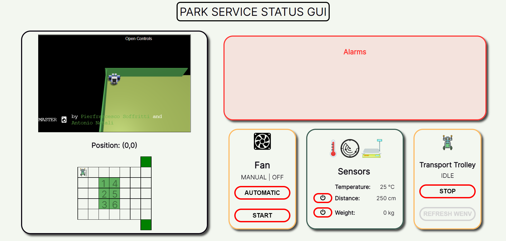
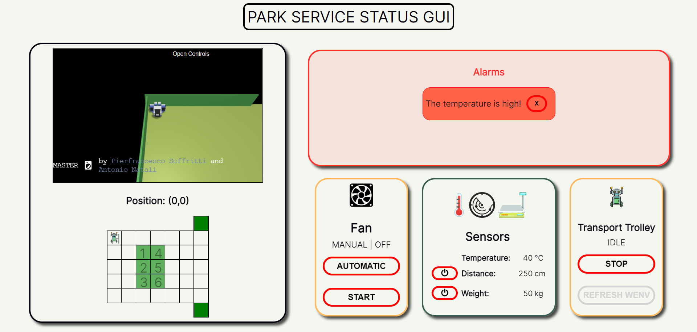
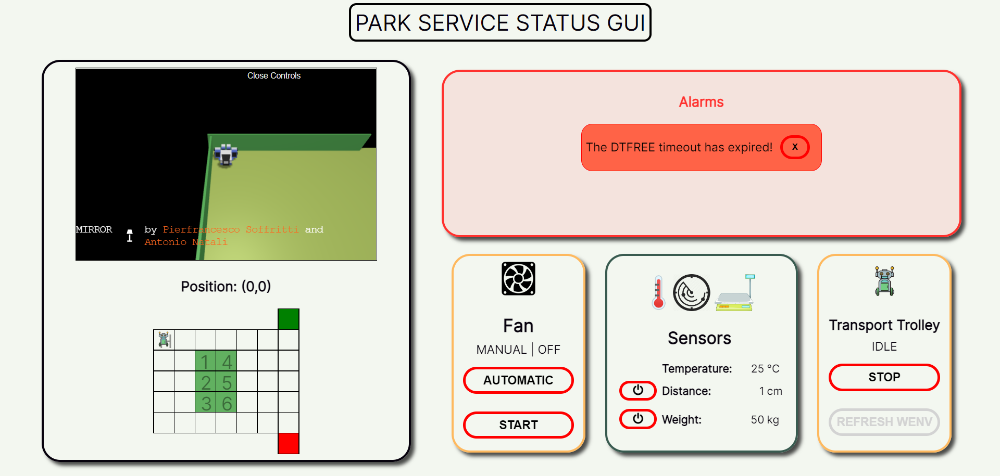
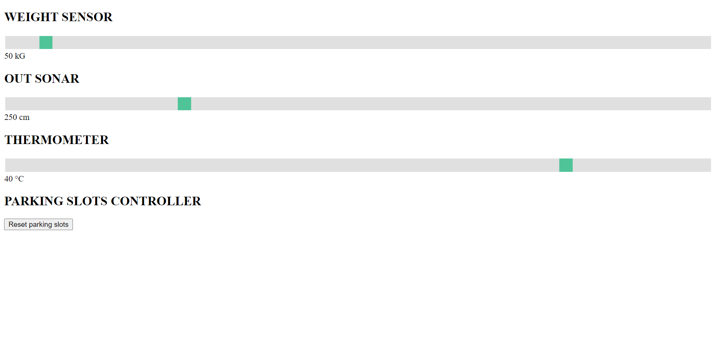

Introduction
Requirements
Requirement analysis
First Problem Analysis
Sprint 1
Sprint 2
Sprint 3
Sprint Backlog
Parking Manager
The goals of this sprint are the following:| Description | Requirements |
|---|---|
| The thermometer is able to measure the temperature inside the parking area. | F19, NF2 |
| The system is able to manage the fan. | F12 (partially), F13 (partially), F14, NF2 |
| The parking area status is observable by the manager. | F10 (partially) |
| The system provides the ParkServiceStatusGUI to the parking manager. | F10, F11, F12, F13, F15 |
| The status of the system must survive after a system reboot. | NF3 |
| Should be possible to analyze the behaviour of the system. | NF4 |
Summary
Problem Analysis
General Considerations and Starting Point
For this fourth sprint, the initial logical architecture is:{kind=link}
This sprint will be focused on the Parking Manager actions. So it will cover the entire Park Manager System. It will also provide a Park Service Status GUI.
We refer to "Business Logic***" as the remaining part of the Business Logic that does not involve the transport trolley actor, the Indoor/Outdoor Controller actors, the Parking Slot Controller actor and the Park Service actor.
Introduction
- the monitoring of the entire system;
- the start/stop of the transport trolley;
- the handling of the fan, based on the temperature measured;
- the handling of the alarms notified.
Thermometer Analysis
- if the temperature is higher or lower than the configurable threshold TMAX;
In the case of a virtual thermometer, it is necessary to have a 'mock' interface that allows you to check and modify the value of the temperature at any time.
It was also decided to insert no logic inside the thermometer in order to make it as reusable as possible: the thermometer is therefore limited only and exclusively to measure the temperature.
The thermometer is model as a
Observable State
Thermometer Filter
For these reasons, we introduce the Thermometer Filter. An entity that is responsible for observing the temperature measured by the thermometer and checking every time a new temperature is measured whether or not it exceeds the TMAX threshold.
Despite the weight sensor/out sonar observation made by the Indoor/Outdoor Controller, the Thermometer Filter observes the Thermometer continuously, since the manager should be notified any time the temperature measured is greater or lower than TMAX, to take the necessary actions for the correct functioning of the system (e.g. power on/off the fan, stop/start the transport trolley).
The Thermometer Filter is model as a
Startup Configuration
- TMAX: temperature threshold which, if exceeded, means that the temperature is too high.
Observable State
Fan Analysis
From the requirements and as already said in the first problem analysis, the fan can be manual or automatic. In the first case, it should be activated by the manager through the Park Service Status GUI, while in the second case it is up to the system to activate the fan at the appropriate time, that is, when the temperature measured by the thermometer is greater than TMAX.
From the requirements the fan is virtual, but to increase the utility of the PMS, it would be appropriate to let the system configurable in order to choose between a virtual or real fan. In this sprint, we focus on the virtual fan.
It was also decided to insert no logic inside the fan in order to make it as reusable as possible: the fan is therefore limited only and exclusively to be powered on or off.
The fan is model as a
Fan Controller
The Fan Controller is modeled as a
The two modes are mutually exclusive.
- In case of manual mode, the fan controller should be able to receive the power on/off command via a proper
manager_fan_on /manager_fan_off dispatch. - In case of automatic mode, the fan controller should be able to observe the Thermometer Filter to understand when is the right time to turn the fan on or off, based on the information exposed by the Thermometer Filter itself. (e.g. when the Thermometer Filter status changes, a proper command should be sent to the fan by the Fan Controller).
In both modes (manual or automatic), the fan controller should be able to communicate with the fan via the right request/response mode.
Observable State
Status Aggregator and Manager Controller
Status Aggregator
To achieve this goal, the Status Aggregator observes each observable entity of the system.
For this reason the Status Aggregator has been modeled as
As already said in the First Problem Analysis for the weight sensor and for the out sonar, the observation of weight sensor and out sonar entities should be configurable: the managere should be able to start/stop the observation depending on his needs. This configurable observation does not interfer with the observation made by the Indoor Controller and Outdoor Controller.
Note that the moment the weight sensor is observed from both Indoor Controller and Status Aggregator, there are conceptually two observations on the same entity at the same time. But since the Status Aggregator and the Indoor Controller reside in the same qak context, thanks to our QakObserver framework, the remote observation is
The same considerations also apply to outsonar and Outdoor Controller.
Observable state
The information that has to be observable must contain the status of the entire system.
Manager Controller
In this way, the Park Service Status GUI has to communicate only with the Manager Controller, that will propagate the messages to the appropriate entities.
The Manager Controller has been modeled as a
Park Service Status GUI
As already analyzed in the First Problem Analysis, a web application can be a valid solution for the realization of the Park Service Status GUI.
The Park Service Status GUI should display the information regarding the status of the system, which should contain:
- the status of the parking slots (free/reserved/occupied);
- the indoor-area status (free/reserved/occupied, weightsensor on/off, weight measured, DTCARENTER alarm);
- the outdoor-area status (free/reserved/occupied, outsonar on/off, distance measured, DTFREE alarm);
- the thermometer status (temperature measured, higher/lower than TMAX);
- the fan status (on/off, manual/automatic, failure);
- the transport trolley status (idle/working/stopped, transportrolley position, move failed);
Regarding the
- Request/response: to obtain the entire system status at once (e.g. a snapshot of the current system situation);
- Publish/subscribe: to obtain information only on topics of interest among those listed above.
The GUI should have a button for each operation such as:
- turn the fan on/off;
- set the fan in automatic/manual mode;
- start/stop the Transport Trolley;
The whole interface must be easy for the manager to understand and use.
Mock Data GUI
This GUI is not specified as a requirement and it is useless in case of a finished product with all real sensors. For that reason no in-depth analysis will be performed.
About Observation
As analysts, we suggest to use JSON as data format, to improve the interaction and the communication, as we indicated also for the sprint 2. Moreover, thanks to Gson or Jackson libraries there's no abstraction gap.
Thanks to our QakObserver Framework, we analyzed three types of observation differentiated by the subject that interrupts the observation itself:
- Continuous observation: an entity observes an other entity always;
- Component's logic observation: observation started and stopped by a component's logic. An entity observes an other entity only on specific circumstances dictated by the logic of the entity and for limited period of time (e.g. the weight sensor observation made by the Indoor Controller);
- Manager input observation: observation initiated and stopped by the manager. Once initialized, the observation is continuous until it is stopped by the manager.
Existing observations are now classified as:
| Observer | Resource | Type |
|---|---|---|
| Indoor Controller | Weight Sensor | |
| Outdoor Controller | Out Sonar | |
| Status Aggregator | Indoor Controller | Continuous observation |
| Status Aggregator | Outdoor Controller | Continuous observation |
| Status Aggregator | Parking Slot Controller | Continuous observation |
| Status Aggregator | Transport Trolley | Continuous observation |
| Status Aggregator | Weight Sensor | |
| Status Aggregator | Out Sonar | |
| Status Aggregator | Thermometer | Continuous observation |
| Status Aggregator | Thermometer Filter | Continuous observation |
| Status Aggregator | Fan Controller | Continuous observation |
| Fan Controller | Thermometer Filter | |
| Park Service Status GUI (web server) | Status Aggregator | Continuous observation |
Security Considerations
Interactions
Machine Readable Model
/**
* ==================================
* ================================== | CLIENT ASKS TO ENTER IN INDOOR AREA [available parking slot]
* ==================================
* client using parkservicegui | request parking_car_interest(X) to parkservicecontroller
* |
* parkservicecontroller | request parking_car_interest(X) to indoorcontroller
* |
* indoorcontroller | observe weightsensor
* | -- wait until measured weight in indoor area is lower than or equal to a given WMAX threshold --
* | request reserve_parking_slot(X) to parkingslotscontroller
* | -- set indoor area reserved --
* |
* parkingslotscontroller | replyTo reserve_parking_slot with parking_slot_reserved(SLOTNUM,TOKENID)
* |
* indoorcontroller | -- save received SLOTNUM --
* | -- save received TOKENID --
* | start dtoccupied timer
* | replyTo parking_car_interest with inform_in(SLOTNUM)
* |
* parkservicecontroller | replyTo parking_car_interest with inform_in(SLOTNUM)
* |
* indoorcontroller | -- wait until measured weight in indoor area is greater than a given WMAX threshold --
* | stop dtoccupied timer
* | start dtcarenter timer
* | -- set indoor area engaged by car --
*
* ==================================
* ================================== | CLIENT ASKS TO ENTER IN INDOOR AREA [unavailable parking slot]
* ==================================
* client using parkservicegui | request parking_car_interest(X) to parkservicecontroller
* |
* parkservicecontroller | request parking_car_interest(X) to indoorcontroller
* |
* indoorcontroller | observe weightsensor
* | -- set indoor area reserved --
* | -- wait until measured weight in indoor area is lower than or equal to a given WMAX threshold --
* | request reserve_parking_slot(X) to parkingslotscontroller
* |
* parkingslotscontroller | replyTo reserve_parking_slot with no_available_parking_slots(X)
* |
* indoorcontroller | replyTo parking_car_interest with inform_in(0)
* | cancel weightsensor observation
* | -- set indoor area free --
* |
* parkservicecontroller | replyTo parking_car_interest with inform_in(0)
*
* ==================================
* ================================== | CLIENT ASKS TO ENTER IN PARKING AREA [indoor area free]
* ==================================
* client using parkservicegui | request car_enter(SLOTNUM) to parkservicecontroller
* |
* parkservicecontroller | request car_enter(SLOTNUM) to indoorcontroller
* |
* indoorcontroller | replyTo car_enter with response_car_enter(IndoorAreaNotReserved)
* |
* parkservicecontroller | replyTo car_enter with response_car_enter(IndoorAreaNotReserved)
*
* ==================================
* ================================== | CLIENT ASKS TO ENTER IN PARKING AREA [indoor area reserved - weight <= WMAX]
* ==================================
* client using parkservicegui | request car_enter(SLOTNUM) to parkservicecontroller
* |
* parkservicecontroller | request car_enter(SLOTNUM) to indoorcontroller
* |
* indoorcontroller | replyTo car_enter with response_car_enter(IndoorAreaNotEngagedByCar)
* |
* parkservicecontroller | replyTo car_enter with response_car_enter(IndoorAreaNotEngagedByCar)
* |
*
* ==================================
* ================================== | CLIENT ASKS TO ENTER IN PARKING AREA [invalid slotnum - indoor area engaged by car]
* ==================================
* client using parkservicegui | request car_enter(SLOTNUM) to parkservicecontroller
* |
* parkservicecontroller | request car_enter(SLOTNUM) to indoorcontroller
* |
* indoorcontroller | replyTo car_enter with response_car_enter(InvalidSlotnum)
* |
* parkservicecontroller | replyTo car_enter with response_car_enter(InvalidSlotnum)
* |
* ==================================
* ================================== | CLIENT ASKS TO ENTER IN PARKING AREA [valid slotnum - indoor area engaged by car]
* ==================================
* client using parkservicegui | request car_enter(SLOTNUM) to indoorcontroller
* |
* indoorcontroller | stop dtcarenter timer
* | -- disable dtcarenter alarm if enabled --
* | [transporttrolley DSL] takeOverCar at INDOOR
* | replyTo car_enter with response_car_enter(TOKENID)
* | -- set indoor area free --
* | cancel weightsensor observation
* |
* parkservicecontroller | replyTo car_enter with response_car_enter(TOKENID)
* |
* indoorcontroller | [transporttrolley DSL] releaseCar at SLOTNUM
* | forward confirm_parking_slot(SLOTNUM, TOKENID) to parkingslotscontroller
* |
* parkingslotscontroller | -- move parking slot SLOTNUM from status RESERVED to OCCUPIED --
* | -- persist information about occupied parking slot SLOTNUM mapped to tokenid TOKENID --
*
* ==================================
* ================================== | ROUTINE CAR EXITS FROM INDOOR AREA
* ==================================
* indoorcontroller | stop dtcarenter timer
* | cancel weightsensor observation
* | -- set indoor area free --
* | -- disable dtcarenter alarm if enabled --
* | forward undone_reservation(SLOTNUM, TOKENID) to parkingslotscontroller
*
* parkingslotscontroller | -- move parking slot SLOTNUM from status RESERVED to FREE --
* | -- persist information about free parking slot SLOTNUM --
*
* ==================================
* ================================== | ROUTINE DTOCCUPIED TIMEOUT
* ==================================
* indoorcontroller | stop dtoccupied timer
* | -- set indoor area free --
* | cancel weightsensor observation
* | forward undone_reservation(SLOTNUM, TOKENID) to parkingslotscontroller
* |
* parkingslotscontroller | -- move parking slot SLOTNUM from status RESERVED to FREE --
* | -- persist information about free parking slot SLOTNUM --
*
* ==================================
* ================================== | ROUTINE DTCARENTER TIMEOUT
* ==================================
* indoorcontroller | stop dtcarenter timer
* | -- enable dtcarenter alarm --
*
* ==================================
* ================================== | ROUTINE WEIGHTSENSOR MEASURE WEIGHT
* ==================================
* weightsensor | received input_weight(W)
* | update observers with new weight W
*
* ==================================
* ================================== | CLIENT ASKS TO PICK UP THE CAR [invalid tokenid]
* ==================================
* client using parkservicegui | request car_pick_up(TOKENID) to parkservicecontroller
* |
* parkservicecontroller | request car_pick_up(TOKENID) to outdoorcontroller
* |
* outdoorcontroller | request validate_tokenid(TOKENID) to parkingslotscontroller
* | -- set outdoor area reserved --
* |
* parkingslotscontroller | replyTo validate_tokenid with invalid_tokenid(X)
* |
* outdoorcontroller | replyTo car_pick_up with accept_out_failure(X)
* | -- set outdoor area free --
* |
* parkservicecontroller | replyTo car_pick_up with accept_out_failure(X)
* |
* ==================================
* ================================== | CLIENT ASKS TO PICK UP THE CAR [valid tokenid]
* ==================================
* client using parkservicegui | request car_pick_up(TOKENID) to parkservicecontroller
* |
* parkservicecontroller | request car_pick_up(TOKENID) to outdoorcontroller
* |
* outdoorcontroller | request validate_tokenid(TOKENID) to parkingslotscontroller
* | -- set outdoor area reserved --
* |
* parkingslotscontroller | replyTo validate_tokenid with valid_tokenid(SLOTNUM)
* |
* outdoorcontroller | [transporttrolley DSL] takeOverCar at SLOTNUM
* | forward free_parking_slot(SLOTNUM, TOKENID) to parkingslotscontroller
* |
* parkingslotscontroller | -- move parking slot SLOTNUM from status OCCUPIED to FREE --
* | -- persist information about free parking slot SLOTNUM--
* |
* outdoorcontroller | [transporttrolley DSL] releaseCar at OUTDOOR
* | observe outsonar
* | -- wait until the measured distance is lower than DMIN --
* | -- set outdoor area engaged by car --
* | start dtfree timer
* | replyTo car_pick_up with accept_out_success(X)
* |
* parkservicecontroller | replyTo car_pick_up with accept_out_success(X)
* |
* ==================================
* ================================== | ROUTINE CAR EXITS FROM OUTDOOR AREA (observed distance D >= DMIN)
* ==================================
* outdoorcontroller | stop dtfree timer
* | cancel outsonar observation
* | -- set outdoor area free --
* | -- disable dtfree alarm if enabled --
*
* ==================================
* ================================== | ROUTINE DTFREE TIMEOUT
* ==================================
* outdoorcontroller | stop dtfree timer
* | -- enable dtfree alarm --
*
* ==================================
* ================================== | ROUTINE OUTSONAR MEASURE DISTANCE
* ==================================
* outsonar | received input_distance(D)
* | update observers with new distance D
*
* ==================================
* ================================== | ROUTINE THERMOMETER MEASURE TEMPERATURE
* ==================================
* thermometer | received input_temperature(T)
* | update observers with new temperature T
*
* ==================================
* ================================== | TRANSPORT TROLLEY START
* ==================================
* manager using parkservicestatusgui | forward manager_transport_trolley_start(X) to managercontroller
* |
* managercontroller | forward transport_trolley_start(X) to transporttrolley
* |
* transporttrolley | -- resume behaviour --
*
* ==================================
* ================================== | TRANSPORT TROLLEY STOP
* ==================================
* manager using parkservicestatusgui | forward manager_transport_trolley_stop(X) to managercontroller
* |
* managercontroller | forward transport_trolley_stop(X) to transporttrolley
* |
* transporttrolley | -- stop behaviour --
*
* ==================================
* ================================== | ROUTINE FAN ON [success]
* ==================================
* fancontroller | request fan_on(X) to fan
* |
* fan | replyTo fan_on with fan_done(X)
* |
* fancontroller | -- set status fan on --
*
* ==================================
* ================================== | ROUTINE FAN ON [failure]
* ==================================
* fancontroller | request fan_on(X) to fan
* |
* fan | replyTo fan_on with fan_fail(REASON)
* |
* fancontroller | -- set failure REASON into the observable status --
*
* ==================================
* ================================== | ROUTINE FAN OFF [success]
* ==================================
* fancontroller | request fan_off(X) to fan
* |
* fan | replyTo fan_off with fan_done(X)
* |
* fancontroller | -- set status fan off --
*
* ==================================
* ================================== | ROUTINE FAN OFF [failure]
* ==================================
* fancontroller | request fan_off(X) to fan
* |
* fan | replyTo fan_off with fan_fail(REASON)
* |
* fancontroller | -- set failure REASON into the observable status --
*
* ==================================
* ================================== | SWITCH FAN TO MANUAL MODE
* ==================================
* manager using parkservicestatusgui | forward manager_fan_manual_mode(X) to managercontroller
* |
* managercontroller | forward manager_fan_manual_mode(X) to fancontroller
* |
* fancontroller | cancel thermometerfilter observation
* | -- set status manual mode --
*
* ==================================
* ================================== | MANAGER SETS FAN ON [only manual mode]
* ==================================
* manager using parkservicestatusgui | forward manager_fan_on(X) to managercontroller
* |
* managercontroller | forward manager_fan_on(X) to fancontroller
* |
* # | ROUTINE FAN ON [success/failure]
*
* ==================================
* ================================== | MANAGER SETS FAN OFF [only manual mode]
* ==================================
* manager using parkservicestatusgui | forward manager_fan_off(X) to managercontroller
* |
* managercontroller | forward manager_fan_off(X) to fancontroller
* |
* # | ROUTINE FAN OFF [success/failure]
*
* ==================================
* ================================== | SWITCH FAN TO AUTOMATIC MODE
* ==================================
* manager using parkservicestatusgui | forward manager_fan_automatic_mode(X) to managercontroller
* |
* managercontroller | forward manager_fan_automatic_mode(X) to fancontroller
* |
* fancontroller | observe thermometerfilter
* | -- set status automatic mode --
*
* ==================================
* ================================== | TEMPERATURE BECOMES HIGH [fan automatic] [ T > TMAX ]
* ==================================
* thermometer | received input_temperature(T)
* | update observers with new temperature T
* |
* thermometerfilter | -- update status with temperature level HIGH --
* |
* fancontroller | -- observe new temperature level HIGH --
* |
* # | ROUTINE FAN ON [success/failure]
*
* ==================================
* ================================== | TEMPERATURE BECOMES LOW [fan automatic] [ T <= TMAX ]
* ==================================
* thermometer | received input_temperature(T)
* | update observers with new temperature T
* |
* thermometerfilter | -- update status with temperature level LOW --
* |
* fancontroller | -- observe new temperature level LOW --
* |
* # | ROUTINE FAN OFF [success/failure]
*
* ==================================
* ================================== | ROUTINE STATUSAGGREGATOR UPDATE
* ==================================
* statusaggregator | -- receive autoMsg() about observed resource update --
* | -- update observers with new status --
*
* ==================================
* ================================== | STATUSAGGREGATOR WEIGHTSENSOR INFO ON
* ==================================
* manager using parkservicestatusgui | forward weightsensor_info_on(X) to managercontroller
* |
* managercontroller | forward weightsensor_info_on(X) to statusaggregator
* |
* statusaggregator | observe weightsensor
*
* ==================================
* ================================== | STATUSAGGREGATOR WEIGHTSENSOR INFO OFF
* ==================================
* manager using parkservicestatusgui | forward weightsensor_info_off(X) to managercontroller
* |
* managercontroller | forward weightsensor_info_off(X) to statusaggregator
* |
* statusaggregator | cancel weightsensor observation
*
* ==================================
* ================================== | STATUSAGGREGATOR OUTSONAR INFO ON
* ==================================
* manager using parkservicestatusgui | forward outsonar_info_on(X) to managercontroller
* |
* managercontroller | forward outsonar_info_on(X) to statusaggregator
* |
* statusaggregator | observe outsonar
*
* ==================================
* ================================== | STATUSAGGREGATOR OUTSONAR INFO OFF
* ==================================
* manager using parkservicestatusgui | forward outsonar_info_off(X) to managercontroller
* |
* managercontroller | forward outsonar_info_off(X) to statusaggregator
* |
* statusaggregator | cancel outsonar observation
*
*/
The QAK models can be found here
Logical Architecture
{kind=link}
Test Plans
TestThermometerTemperatureHigh
- Description: The thermometerfilter is able to switch the logical temperature state from LOW to HIGH when the temperature becomes greater than TMAX.
-
Initial conditions:
- The temperature measured by the thermometer is lower than or equal to TMAX.
- The logical temperature measured by the thermometerfilter is LOW.
-
Expectations:
- The status exposed by the ParkServiceStatusGUI regarding the logical temperature becomes HIGH.
- Tested requirements: F19
TestThermometerTemperatureLow
- Description: The thermometerfilter is able to switch the logical temperature state from HIGH to LOW when the temperature becomes lower than or equal to TMAX.
-
Initial conditions:
- The temperature measured by the thermometer is greater than TMAX.
- The logical temperature measured by the thermometerfilter is HIGH.
-
Expectations:
- The status exposed by the ParkServiceStatusGUI regarding the logical temperature becomes LOW.
- Tested requirements: F19
TestParkServiceStatusGuiSetFanManualMode
- Description: After setting the fan in manual mode the manager starts and stops the fan.
-
Initial conditions:
- The fan is in automatic mode.
- The fan is OFF.
-
Expectations:
- The status exposed by the ParkServiceStatusGUI regarding the fan mode becomes MANUAL.
- The status exposed by the ParkServiceStatusGUI regarding the fan status becomes ON after the manager's input.
- The status exposed by the ParkServiceStatusGUI regarding the fan status becomes OFF after the manager's input.
- Tested requirements: F10, F12, F13
TestParkServiceStatusGuiSetFanAutomaticMode
- Description: After setting the fan in automatic mode the fan switch its status between ON and OFF depending on the logical temperature measured by the thermometer in the parking-area.
-
Initial conditions:
- The fan is in manual mode.
- The fan is OFF.
-
Expectations:
- The status exposed by the ParkServiceStatusGUI regarding the fan mode becomes AUTOMATIC.
- The status exposed by the ParkServiceStatusGUI regarding the fan status becomes ON when the logical temperature is HIGH.
- The status exposed by the ParkServiceStatusGUI regarding the fan status becomes ON when the logical temperature is LOW.
- Tested requirements: F10, F12, F13
TestParkServiceStatusGuiResumeTransportTrolley
- Description: As a manager start and stop the transport trolley.
-
Initial conditions:
- The transport trolley is not stopped.
-
Expectations:
- The status exposed by the ParkServiceStatusGUI regarding the transport trolley status becomes idle/working when the transport trolley is resumed and stopped when the transport trolley is stopped.
- Tested requirements: F11
Project
About Thermometer configurability
In our domain the thermometer is a mock (virtual) one and the input temperature is received by an external dispatch sent by the MockDataGUI. However, since in the future the customer might ask to use a real thermometer we decided to develop a small support able to handle both the real thermometer and the virtual (mock) thermometer. In particular, the class ThermometerSupport.kt can be
The system administator can configure the system in order to use the virtual thermometer or the real one by tweak the mode parameter ("virtual" or "real") in the configuration file config_thermometer.json.
In both cases (virtual or real mode) the
In case of real thermometer the dispatch could be generated and sent in form of autoMsg() by a thread or coroutine internal to the thermometer. This autoMsg() should be sent by means of RealThermometerSupport.kt (instantiated by the ThermometerSupport.kt) each time a new temperature is measured in the Parking Area.
However, at the time of writing, as per requirements, only the
About observable JSON status
The same considerations made here apply. The Kotlin data class Temperature.kt contains the representation of the JSON status exposed by thermometer.
About Fan configurability
In our domain the fan is a mock (virtual) one. However, since in the future the customer might ask to use a real fan we decided to develop a small support able to handle both the real fan and the virtual (mock) fan. In particular, the class FanSupport.kt can be
The system administator can configure the system in order to use the virtual fan or the real one by tweak the mode parameter ("virtual" or "real") in the configuration file config_fan.json.
In both cases (virtual or real mode) the
In case of real fan this autoMsg() should be sent by means of RealFanSupport.kt
However, at the time of writing, as per requirements, only the
About thermometerfilter
The thermometerfilter is designed as an observable QActor. It interacts with the other entities in the same way as explained in the problem analysis. The system administrator can configure the
About observable JSON status
The same considerations made here apply. The Kotlin data class TemperatureStatus.kt contains the representation of the JSON status exposed by thermometerfilter.
About fancontroller
The fancontroller is designed as an observable QActor. It interacts with the other entities in the same way as explained in the problem analysis.
About observable JSON status
The same considerations made here apply. The Kotlin data class FanControllerStatus.kt contains the representation of the JSON status exposed by fancontroller.
About statusaggregator
The statusaggregator is designed as an observable QActor. It observes all the observable entities in the Automated Car Parking in order to aggregate the observable status.
It makes great use of the
The observation of entities like weightsensor and outsonar is disabled at default but can be enabled/disabled by the manager (through the ParkServiceStatusGUI) at any moment.
About observable JSON status
The same considerations made here apply. The Kotlin data class AggregateStatus.kt contains the representation of the JSON status exposed by statusaggregator.
About managercontroller
The managercontroller is designed as a QActor. It acts like a small indirection layer between the ParkServiceStatusGUI Web Server and the others domain logic actors. Its main behaviour is to forward the dispatches from the ParkServiceStatusGUI to the appropriate domain logic entity.
Considerations about observable JSON status
The considerations done in Sprint 2 are yet valid.
ParkServiceStatusGUI Server
We chose to use
In particular, the WebServer exposes
| POST API | Input | Output | Description |
|---|---|---|---|
| /manager_fan_on | The manager wants to start the fan. Meaningful only if the fan is in manual mode. | ||
| /manager_fan_off | The manager wants to stop the fan. Meaningful only if the fan is in manual mode. | ||
| /manager_fan_manual_mode | The manager wants to take manual control of the fan in order to start/stop it. | ||
| /manager_fan_automatic_mode | The manager wants to leave the control of the fan to the domain logic. | ||
| /manager_transport_trolley_start | The manager wants to resume the transporttrolley behaviour. | ||
| /manager_transport_trolley_stop | The manager wants to stop the transporttrolley behaviour. | ||
| /weightsensor_info_on | The manager wants to receive updates about the measured weight by the weightsensor. | ||
| /weightsensor_info_off | The manager wants to stop the reception of updates about the measured weight by the weightsensor. | ||
| /outsonar_info_on | The manager wants to receive updates about the measured distance by the outsonar. | ||
| /outsonar_info_off | The manager wants to stop the reception of updates about the measured distance by the outsonar. | ||
| /wenv_url | URL | Get the URL of the WEnv. This request is handled by the WebServer itself. | |
| /status | JSON | Retrieve the latest status of the statusaggregator (in the same format as encoded by the statusaggregator itself). Useful to initialize the GUI. This request is handled by the WebServer itself. |
Below are reported the topics URL and their meaning.
| TOPIC URL | Description |
|---|---|
| /topic/indoorareastatus | Receive informations (in JSON format) about the status of the indoorarea. The IndoorAreaStatus.kt Kotlin Data Class is the one that is encoded in JSON format and sent to the subscriber of this topic each time a change occurs. |
| /topic/outdoorareastatus | Receive informations (in JSON format) about the status of the outdoorarea. The OutdoorAreaStatus.kt Kotlin Data Class is the one that is encoded in JSON format and sent to the subscriber of this topic each time a change occurs. |
| /topic/temperaturestatus | Receive informations (in JSON format) about the status of the temperature in the parking area. The TemperatureStatus.kt Kotlin Data Class is the one that is encoded in JSON format and sent to the subscriber of this topic each time a change occurs. |
| /topic/fanstatus | Receive informations (in JSON format) about the status of the fan. The FanStatus.kt Kotlin Data Class is the one that is encoded in JSON format and sent to the subscriber of this topic each time a change occurs. |
| /topic/transporttrolleystatus | Receive informations (in JSON format) about the status of the transportrolley. The TransportTrolleyStatus.kt Kotlin Data Class is the one that is encoded in JSON format and sent to the subscriber of this topic each time a change occurs. |
| /topic/parkingslotsstatus | Receive informations (in JSON format) about the status of the parking slots. The ParkingSlotsStatus.kt Kotlin Data Class is the one that is encoded in JSON format and sent to the subscriber of this topic each time a change occurs. |
The class ParkServiceStatusGuiController.kt implements those mappings between POST requests and domain logic interactions using the Spring Framework. It also splits the aggregate status into STOMP Topics.
Moreover the ParkServiceGuiController uses the classes RemoteQakContext.kt and RemoteQActor.kt in order to perform request (and receive response) to/from the domain logic actors. A TCP connection is created in order to communicate with the
ParkServiceStatusGUI Client
A JavaScript frontend is used to perform the mapping between GUI buttons and POST requests. It also subscribe to all the STOMP topics exposed by the Web Server. Each time a status notification arrives the GUI is updated accordingly. Note that in the status are contained also those
Below are reported some images related to the ParkServiceStatusGUI.
|  |  |
| ParkServiceStatusGUI idle. | Alarm message: Temperature high. |
|  | |
| Alarm message: DTCARENTER timer expired. | Alarm message: DTFREE timer expired. |
MockDataGUI
It is basically the same GUI/WebServer developed in Sprint 3.
In this sprint we just added the possibility to send an
Below are reported some images related to the MockDataGUI.
|  |
|
The THERMOMETER "slider" can be used to set the temperature to the desired value, which is shown below the slider itself. |
About security
We should use a secure connection in order to exchange data between the ParkServiceStatusGUI and the WebServer. A perfect match could be a secure
For the sake of simplicity we do not handle security issues in this first prototype.
About configuration files
| File Name | Description |
|---|---|
| systemthermometer.pl |
Can be used to configure the listening port of the |
| config_thermometer.json | Contains the mode ("virtual" or "real") of the thermometer. |
| systemfan.pl |
Can be used to configure the listening port of the |
| config_fan.json | Contains the mode ("virtual" or "real") of the fan. |
| systembusinesslogic.pl |
Can be used to configure the hostname and port of the:
|
| config_temperature.json | Contains the informations to properly configure the TMAX threshold as explained here. |
| application.properties |
Can be used to configure the hostname and port of the |
| application.properties |
Can be used to configure the hostname and port of the |
Thermometer QAK
The QAK below contains the implementation of the thermometer QActor.
Fan QAK
The QAK below contains the implementation of the fan QActor.
BusinessLogic QAK
The QAK below contains the implementation of the domain logic actors. In this sprint we focues on the following entities: thermometerfilter, fancontroller, managercontroller and statusaggregator.
Testing
The tests have been described in the above sections and have been implemented here. Each test interacts with the webservers by means of POST requests, so each test simulates the client behaviour.
In this sprint we also updated the tests described in Sprint 2 and Sprint 3 in order to interact with the Automated Car Parking entities through the ParkServiceStatusGUI. The changes are only those regarding how we send commands to entities and how we retrieve their status; the tests behaviour remain unchanged.
How to run
- Open a terminal inside the "Sprint 4 - Parking Manager" directory
-
Build all the libraries with:
[WINDOWS] .\rebuild_for_docker.bat
or[LINUX] ./rebuild_for_docker.bash
-
Build the docker images with:
docker-compose -f sprint4.yaml build
-
Launch the docker images with:
docker-compose -f basicrobotVirtual.yaml -f sprint4.yaml up
- Wait until all the docker images are running...
- Open the ParkServiceStatusGUI and monitor it while the tests are running in order to catch and handle "move fail" errors.
- Open a new terminal inside the "it.unibo.sprint4.test" directory
-
Launch the tests with:
gradle test --tests it.unibo.sprint2.test.TestPlan
gradle test --tests it.unibo.sprint3.test.TestPlan
gradle test --tests it.unibo.sprint4.test.TestPlan
Deployment
We used Docker to deploy the software developed during this sprint.
How to run
- Open a terminal inside the "Sprint 4 - Parking Manager" directory
-
Build all the libraries with:
[WINDOWS] .\rebuild_for_docker.bat
or[LINUX] ./rebuild_for_docker.bash
-
Build the docker images with:
docker-compose -f sprint4.yaml build
-
Launch the docker images with:
docker-compose -f basicrobotVirtual.yaml -f sprint4.yaml up
- Wait until all the docker images are running...
- Open the ParkServiceGUI, ParkServiceStatusGUI, MockDataGUI and use them.
Logging
-
weightsensor
docker logs --timestamps -f sprint4-parkingmanager_weightsensor_1
-
outsonar
docker logs --timestamps -f sprint4-parkingmanager_outsonar_1
-
thermometer
docker logs --timestamps -f sprint4-parkingmanager_thermometer_1
-
fan
docker logs --timestamps -f sprint4-parkingmanager_fan_1
-
businesslogic
docker logs --timestamps -f sprint4-parkingmanager_businesslogic_1
-
parkservicegui
docker logs --timestamps -f sprint4-parkingmanager_parkservicegui_1
-
parkservicestatusgui
docker logs --timestamps -f sprint4-parkingmanager_parkservicestatusgui_1
Example ParkServiceStatusGUI
By: |
|

|

|
| Lorenzo Persampieri | Gianluca Soavi |
|---|---|
| lorenzo.persampieri@studio.unibo.it | gianluca.soavi@studio.unibo.it |
| Github Repository | |
| https://github.com/lorepersa/Automated-Car-Parking | |